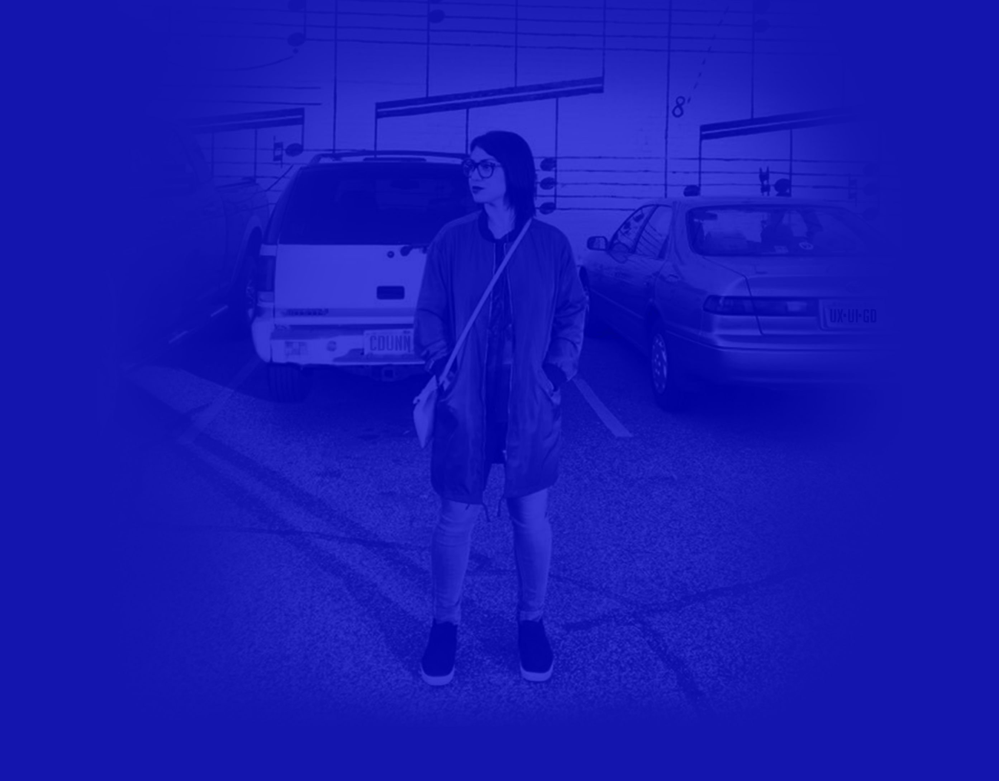
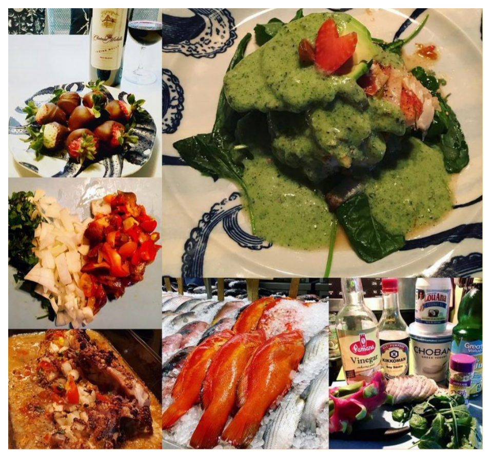
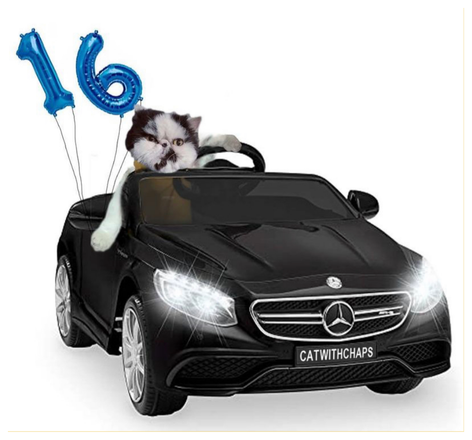
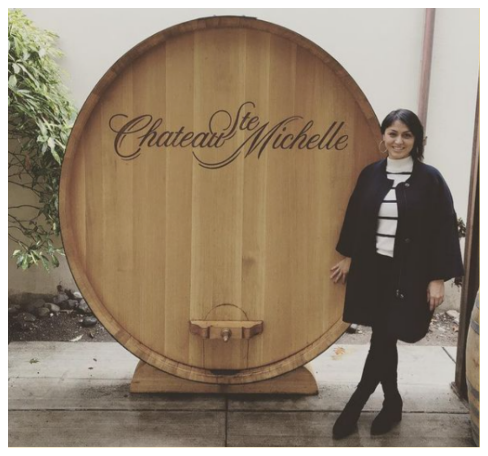

Carmel Dunn
Graphic / UI / UX Designer
Graphic / UI / UX Designer
My path into UX/UI began during the pandemic, where I transitioned from designing layouts for materials
based on given marketing data or from what I felt would be the next best design to put out in the world.
Prior to the pandemic, I was intrigued by the process of product design, but seeing how it helped
businesses that could no longer operate in-person made me take the jump to learn the UX/UI design process
so that I could maybe put a product out in the world that will be useful to users in need one day. In
2021, I learned to conduct user research, created workflows and designs that helped define an existing or
new product, and established a collaborative design system. During that time, I’ve worked with colleagues
on UX/UI projects varying from web, app, to branding experiences.
Drawing in skillsets from my prior background in Graphic Design, I bring a perspective of best layout practices for artwork and organizational aspect of content into my design projects. I am always curious about why people make the decisions they do and I find it exciting to design functional, thoughtful solutions that better serve our community.
When I’m not designing you may find me flexing my creative juices through reading books on topics in relation to my design curiosity, attending a design presentation to get inspired, getting excited about colors from various periods in history at a museum or expanding my knowledge through online tutorials.
Drawing in skillsets from my prior background in Graphic Design, I bring a perspective of best layout practices for artwork and organizational aspect of content into my design projects. I am always curious about why people make the decisions they do and I find it exciting to design functional, thoughtful solutions that better serve our community.
When I’m not designing you may find me flexing my creative juices through reading books on topics in relation to my design curiosity, attending a design presentation to get inspired, getting excited about colors from various periods in history at a museum or expanding my knowledge through online tutorials.
What have I been up to?
Here is my professional history:
Here is my professional history:
My passions and interests
You’ve scrolled down to this! Glad that you want to know more about me.
You’ve scrolled down to this! Glad that you want to know more about me.
Let’s Connect!
Find me on these social channels:
Find me on these social channels:


I love cooking because it helps me relax. Sometimes I’ll pretend that I’m on Top Chef or Chopped. Bobby
Flay is my favorite Chef!

My Persian cat who likes to party hard when I am not at home, which is why I like to keep my eye on him
while working from home.
View resume
View resume
back
UX/UI Design Projects
Graphic Design Projects
About
Contact

Always competing with myself and achieving goals for health.

Wine tasting is always a good time! I’ve learned how to make a Super Tuscan wine and got 50 bottles in
return of it after judging wine labels.
Creating cards for friends can be fun!
Fall is my favorite and roasting the seeds after pumpkin carving is such a treat!